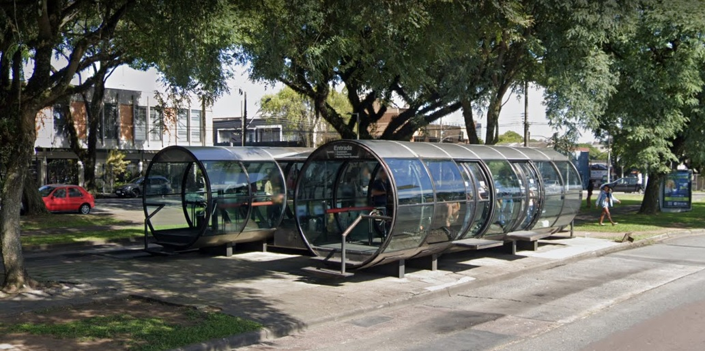
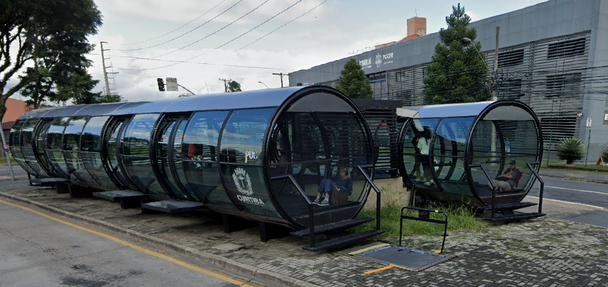
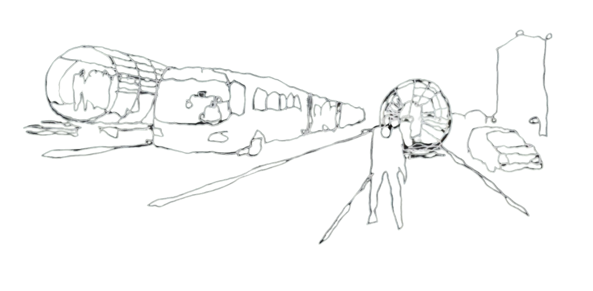

Bem-vindo ao RotaFácil


Estações tubo Paiol e PUC
Projeto RotaFácil
Este projeto foi criado para facilitar o acesso às informações das linhas-tubo de Curitiba, especialmente para quem depende do transporte público todos os dias.
Atualmente o site conta com as rotas dos 2 tubos mais próximos a PUC-PR, ajudando moradores e estudantes a consultar horários e trajetos com rapidez.
A proposta do RotaFácil é oferecer uma maneira fácil e intuitiva de saber qual linha pegar, quando e onde.
Com um layout simples e moderno, o site se destaca entre outras plataformas, tornando a experiência mais prática para quem só quer chegar no destino sem dor de cabeça.
